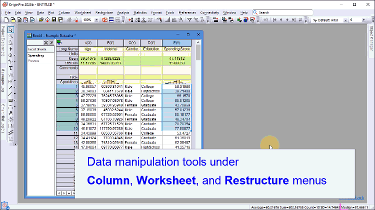

統計モードでは、基本的なメニューやボタンのみが表示されるため、インターフェース上でツールが見つからない場合は、検索ボックスを使ってツール名を入力し、実行してください。
統計モードは、統計解析に特化するためにOrigin 2025bから導入された機能です。このモードでは、グラフツールバーの多くのボタンや高度な解析ツールを非表示にすることで、Originのインターフェースを簡素化します。また、作図メニューも再構成され、統計グラフにアクセスしやすく、操作しやすくなっています。また、DOE（実験計画法）などの人気のある統計用アプリがあらかじめインストールされています。

統計モードでは、基本的なメニューやボタンのみが表示されるため、インターフェース上でツールが見つからない場合は、検索ボックスを使ってツール名を入力し、実行してください。 |

| Note:
統計GUIを選択すると、実験計画法（DOE）アプリが事前インストールされます。このアプリを使用するには、OriginProのインストール前にR（バージョン4.4.1）をインストールしておく必要があります。このバージョンのRソフトウェアを入手するには、以下のリンクを使用してください。 |
いつでもデフォルトモードに戻すことができます。
このFAQページも参照して下さい。